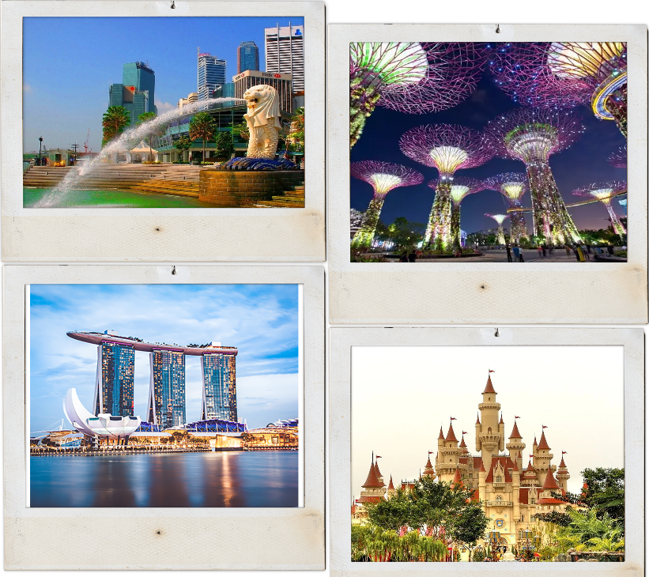

NewYork
New York City, a vibrant metropolis pulsating with energy, offers endless photographic opportunities for enthusiasts and
professionals alike. From the iconic skyline adorned with architectural marvels like the Empire State Building and One
World Trade Center to the picturesque tranquility of Central Park's verdant landscapes, every corner of the city tells a
unique story through the lens. Capture the hustle and bustle of Times Square's neon-lit streets, the historic charm of
Brooklyn's brownstone-lined neighborhoods, or the cultural melting pot of street art in the vibrant borough of Queens.
Whether it's the glitz and glamour of Broadway, the serene waterfront vistas of the Hudson River, or the eclectic mix of
cultures found in its diverse communities, New York City is a photographer's dream destination, offering a kaleidoscope
of visual experiences waiting to be immortalized.

Singapore
Singapore, a dynamic city-state nestled in Southeast Asia, presents a myriad of captivating scenes for both amateur and
seasoned photographers. With its modern skyline punctuated by iconic landmarks such as the Marina Bay Sands and the
futuristic Supertree Grove at Gardens by the Bay.Explore the cultural tapestry of neighborhoods like Chinatown, Little India, and Kampong Glam, where vibrant colors and
intricate details abound, providing endless opportunities for street photography. Don't miss the lush greenery of the
UNESCO-listed Singapore Botanic Gardens, a paradise for nature enthusiasts seeking to capture the beauty of exotic flora
and fauna. Indulge in the bustling atmosphere of hawker centers, where the aromas of diverse cuisines mingle with the
chatter of locals, offering a feast for the senses and a rich tapestry of life to photograph. Whether it's the sleek
lines of modernity or the rich tapestry of tradition, Singapore invites photographers to discover its multifaceted charm
and capture its essence in every frame.
Switzerland
Switzerland, a captivating country nestled in the heart of Europe, offers photographers a wealth of enchanting vistas
waiting to be captured. From the majestic peaks of the Swiss Alps to the charming villages dotted along serene
lakeshores, Switzerland's landscapes provide a rich tapestry of visual experiences. Explore the historic charm of cities
like Zurich and Geneva, where modernity harmoniously blends with tradition, or venture into the Alpine countryside to
photograph the timeless beauty of snow-capped mountains and lush valleys. Whether it's the vibrant colors of spring
flowers in bloom or the tranquility of a snow-covered landscape, Switzerland invites photographers to discover its
diverse and picturesque scenery, each frame telling a unique story of this alpine wonderland.